Generalized Additive Models
Israel Borokini
November 20, 2016
Introduction
Regression analysis is used to investigate the relationships between and among response and predictor variables. Once a reliable relationship has been established among the variables, the analysis can be used to estimate how changes in an independent variable affect the response variable.
Regression models have three components: 1. Response, Y [also called regressand, criterion, or endogenous dependent variables] 2. Predictors, X [also called regressors, independent, exogenous or explanatory variables] 3. Unknown parameters, ?? The typical relationship among the three is: Y ~ f(X, ??) or E(Y|X) = f(X, ??) While function f, must be specified.
Regression models are used for describing the correlation and directionality of the variables (parametric, semi-parametric or non-parametric), making inference on the relationship between predictors and response variables, evaluating the relative strength (or influence) of each predictor on the response, and predicting the future effect of changes in response variables in relation to changes in predictor variables. Hence, a good model should perform three functions: description, inference and prediction.
Linear regression
There are many extensions of linear regression: Linear regression is used to describe the relationship between dependent variables and one or many independent variables. If only one dependent variable (interval or ratio) is used with one independent variable, it is called simple linear regression, given as: Y = ?? + ??*X + ??
If more than one independent variable is used, but for only one dependent variable (interval or ratio), then it is called multiple linear regression, given as: Y = ?? + ??_1*X_1 + ??_2*X_2 + . + ??_n*X_n + ?? Where ?? ~ N (0,??^2) ?? and ?? are intercept and slope respectively, to be determined at CI = 95% using ordinary least squares (OLS) method; ?? - residual error, to cover unexplained information, assumed to be normally distributed with mean of 0 and ??^2; N is the sample size However, multiple linear regression [also called multivariable linear models] is different from multivariate linear regression [also called general linear models], which involves prediction of two or more correlated dependent variables using the same set of independent variables.
Logistic regression is used when one binary (or categorical) dependent variable is used with two or more independent variables; while ordinal regression is used when the dependent variable is ordinal data. Multinominal regression or discriminant analysis are used for only one dependent nominal variable. Probit model is a special case of logistic regression where dependent variable has only two values, for example, present or absent.
There are several other extensions of the linear models including generalized linear models (GLMs), heteroscedastic models or hierarchical linear models, etc. some of which are discussed later.
Assumptions of linear models (parametric models)
- Linearity: predictors and response variables must have linear relationship; hence linear regressions are sensitive to outliers and data inaccuracy. This can be tested with scatterplots
- Normality: all variables to be used must be normally distributed. This can be checked using histogram, Q-Q plot, partial residual plots, Shapiro-Wilk test (for parametric regression), or Anderson-Darling test.
- Little or no multicollinearity: multicollinearity means there is strong correlations among predictors, indicated as higher r values closer to 1.0. Singularity is when r = 1.0. It increased dimensionality of models while adding no new information, increases noise and leads to bias predictions. Multicollinearity can be detected using:
- Correlation matrix: (correlation values >1 indicates multicollinearity)
- Tolerance measures: T = 1 - R^2 (T < 0.1 indicates multicollinearity)
- Variance inflation factor: VIF = 1/T (VIF >100 indicates multicollinearity)
- Condition index (values ???10 indicates multicollinearity) Depending on the studied system, some of the correlated variables should be removed from the model.
- Autocorrelation: This is statistical dependence among residuals, given as: y(x+1) = y(x). This can be detected using scatter plots, or running Durbin-Watson’s d test, in which d values > 2.5 indicates autocorrelation.
- Homoscedasticity: if the residual plots have the same width for all values of the response variable, then the data is homoscedastic. In other words, variance should be constant for the errors of all response variable data points, regardless of the predictors. See Figure 1. This can be detected using scatter plots or Goldfeld-Quandt test.
- The error is assumed to be normally distributed with mean of 0 and ??^2 for predictors.
- The general rule of thumb is that there should be 20 dependent values to 1 independent value. Model transformations (a little digression here.) Transformations are used if the data is non-normal. See Figure 2 for types of transformations. Square root transformation is used when the moderately and positively skewed. Substantial non-normal positively skewed data is corrected by log transformation. Inverse transformation is used to correct severe non-normal positively skewed data. Data reflection should be done to negatively skewed data before transformation. In case of heteroscedastic data, unknown parameters should be estimated using general least squares (GLS) or iteratively weighted least squares (IRLS).
Types of regression models
- Parametric model: These models adhere strictly to the linear model assumptions described earlier, such that average change in response variables is proportional to change in predictors. All linear regression models and their extensions are examples of parametric models.
- Non-parametric model: this type of models assumes no relationship among predictors and response variables. In order words, plots show a curved relationship between variables. Non-parametric models include kernel regression and non-parametric multiplicative regression. This becomes the last resort when transformation does not ensure that data meets assumptions of linear regression. Unknown parameters are estimated using nonlinear least squares.
- Semi-parametric model: This is a case where the shape of relationship among variables are determined by the data, hence the relationship is not restricted to any shape. Examples of this include additive models, generalized additive models.
Generalized linear models
GLM is a generalization of linear regression to allow for modelling of response variables that have non-normal error distribution. This is operated by relating the predictor variables to the mean of response variable, via a link function g. In this way, different forms of linear regression are unified into one model. The developers, Drs. John Nelder and Robert Wedderburn, recommended using maximum likelihood estimation for the unknown parameters. Kindly note that there are many types of link function, depending on the distribution family, but the predictor variables must be linear.
Do not confused generalized linear model with general linear model. While both models use least square method to estimate unknown parameters, residual distribution in general linear model is assumed to be Gaussian, but in GLM, residual distribution can belong to any exponential distribution family, e.g. poisson, logistic, linear, binomial, negative binomial or gamma. In general linear model, Y must be continuous data, while in GLM, it can be categorical, continuous, interval, etc. In general linear model, residual distribution must be linear, but GLM accommodates non-linear residual distribution, as in binomial response. Also, in general linear model, OLS is not relaxed as errors are fit to linear distribution, but in GLM, OLS is relaxed and errors can be modeled to fit the model.
Additive models
This was developed by Dr. Stone in 1985, to estimate additive approximation to multivariate regression function. Therefore, it helps reduce the effect of dimensionality in the model by using univariate smoother. Relationships among variables are explained by individual terms estimates.
Generalized additive models
GAM is a semi-parametric extension of GLM, which makes assumptions that link functions are additive and components are smooth. Statistically, the main difference between GLM and GAM is that in GAM, linear predictor is not forced to be linear, but is the sum of smoothing functions. GAM can handle non-linear, linear and non-monotonic relationships between response and predictor variables. GAM was developed by Drs. Hastie and Tibshirani, who were students of the professors who developed GLM. Essentially, shape of predictor functions is determined by the data, therefore no assumption is made on the specific link function for error distribution. GAM is given as: Y = ?? + f(X) + ?? Where ??*X is replaced by a smoothing curve f(X) which is derived from the model. In the classical GAM, the response variable is scalar, but Yee and Wild (1996) developed vector smoothing for model classes including multiple logistic regression for nominal response variables, bivariate probit, bivariate logistic, and continuation ratio model, etc. This extension of GAM is called vector generalized additive model. (VGAM).
How GAM works
The predictors are first separated into knot, k (sections), low order polynomials or spline functions are used to fit the data into each section independently. Then, functions of all k are added to predict the link function (smoothing), which is why it is called additive model. Smoothing of knots is done using “loess” and “splines”, depending on R package used. Model fitting is based on likelihood methods (e.g. AIC scores).
Uniqueness of GAM
- The non-parametric (unspecified) function f of the predictor variables x
- GAM is flexible and provide excellent fit for both linear and nonlinear relationships (multiple link functions)
- Just like GLM, GAM can be applied to any exponential distribution family
- Regularization of predictor functions helps to avoid over-fitting. Application and advantages of GAM
- Very powerful for prediction and interpolation
- Highly used in SDMs and ENMs (Elith et al. 2006)
- Analogous to hinge feature of maxent algorithm (Phillips et al. 2006)
- Building optimization models
- Comparatively GAMs shows lower AIC scores and explained higher deviance than GLMs
- Applied in Genetics, epidemiology, molecular biology, air quality and medicine (Dominici et al. 2002).
R packages that implement GAM
- gdxrrw (can read or write GDX files)
- mgcv - requires package “nlme”
- gam (original GAM package developed by Hastie and Tibshirani) - requires “splines” package
- mda - “bruto” function
- gamstools
Example
Example and exercise are given in the R codes provided below
library(mgcv)## Warning: package 'mgcv' was built under R version 3.3.2## Loading required package: nlme## Warning: package 'nlme' was built under R version 3.3.2## This is mgcv 1.8-16. For overview type 'help("mgcv-package")'.library(nlme)
data("airquality")
#setwd("C:\\Users\\tbisrael\\Documents\\Academic Classes\\Fall 2016\\NRES 746\\GAMs")
ozone.data<- airquality #read.csv("ozone.csv", header = T)
head(ozone.data) # ozone is the response variable while the others are predictors## Ozone Solar.R Wind Temp Month Day
## 1 41 190 7.4 67 5 1
## 2 36 118 8.0 72 5 2
## 3 12 149 12.6 74 5 3
## 4 18 313 11.5 62 5 4
## 5 NA NA 14.3 56 5 5
## 6 28 NA 14.9 66 5 6ozone.data$rad <- ozone.data$Solar.R
ozone.data$temp <- ozone.data$Temp
ozone.data$wind <- ozone.data$Wind
ozone.data$ozone <- ozone.data$Ozone
ozone.data <- ozone.data[,c("ozone","rad","wind","temp")]
pairs(ozone.data)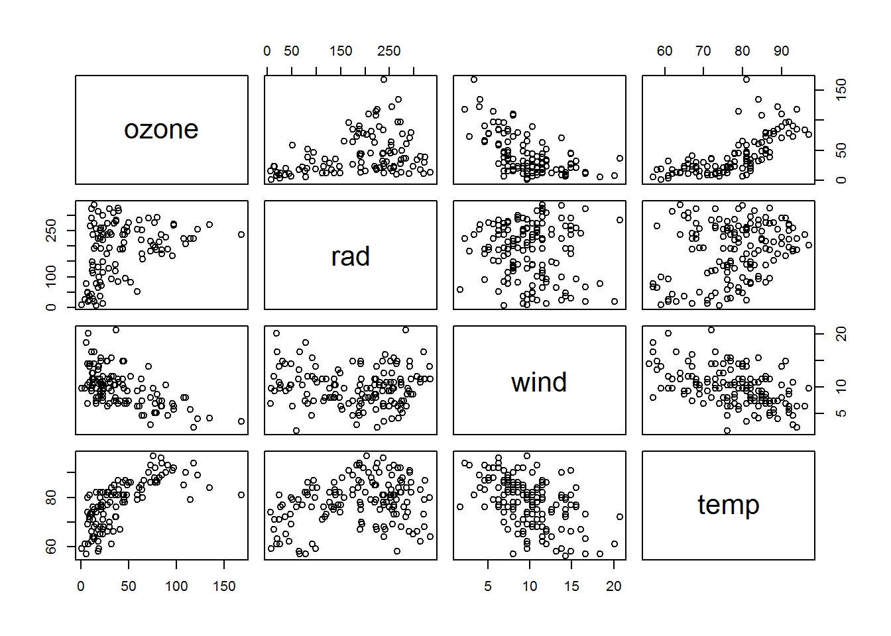
# we can see that the relationships among the variables are not linear
plot(ozone.data$ozone)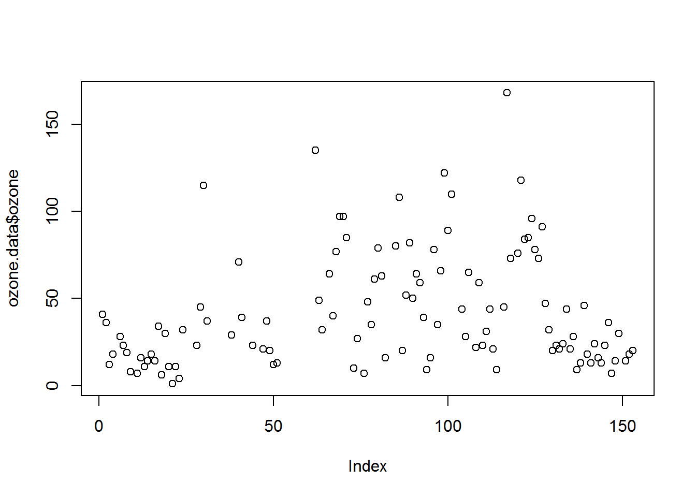
# and the response variable does not obey linear regression assumptionLet’s first play around linear regression
model1<-lm(ozone~rad+temp+wind, data = ozone.data)
summary(model1)##
## Call:
## lm(formula = ozone ~ rad + temp + wind, data = ozone.data)
##
## Residuals:
## Min 1Q Median 3Q Max
## -40.485 -14.219 -3.551 10.097 95.619
##
## Coefficients:
## Estimate Std. Error t value Pr(>|t|)
## (Intercept) -64.34208 23.05472 -2.791 0.00623 **
## rad 0.05982 0.02319 2.580 0.01124 *
## temp 1.65209 0.25353 6.516 2.42e-09 ***
## wind -3.33359 0.65441 -5.094 1.52e-06 ***
## ---
## Signif. codes: 0 '***' 0.001 '**' 0.01 '*' 0.05 '.' 0.1 ' ' 1
##
## Residual standard error: 21.18 on 107 degrees of freedom
## (42 observations deleted due to missingness)
## Multiple R-squared: 0.6059, Adjusted R-squared: 0.5948
## F-statistic: 54.83 on 3 and 107 DF, p-value: < 2.2e-16summary.aov(model1)## Df Sum Sq Mean Sq F value Pr(>F)
## rad 1 14780 14780 32.94 8.95e-08 ***
## temp 1 47378 47378 105.61 < 2e-16 ***
## wind 1 11642 11642 25.95 1.52e-06 ***
## Residuals 107 48003 449
## ---
## Signif. codes: 0 '***' 0.001 '**' 0.01 '*' 0.05 '.' 0.1 ' ' 1
## 42 observations deleted due to missingnessopar <- par(mfrow = c(2, 2))
plot(model1) 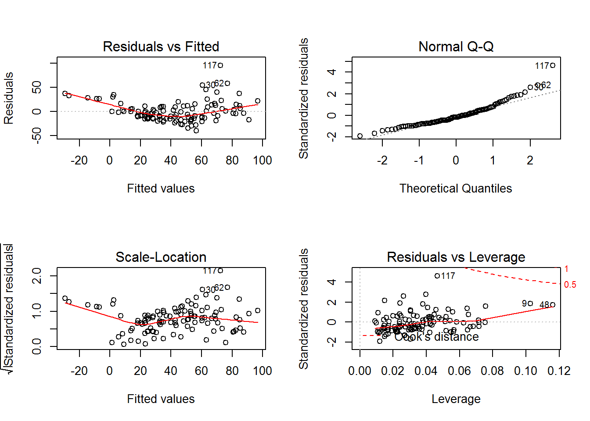
# the results suggests non-normality of residuals.
model2<-glm(ozone~rad+temp+wind, data = ozone.data)
summary(model2)##
## Call:
## glm(formula = ozone ~ rad + temp + wind, data = ozone.data)
##
## Deviance Residuals:
## Min 1Q Median 3Q Max
## -40.485 -14.219 -3.551 10.097 95.619
##
## Coefficients:
## Estimate Std. Error t value Pr(>|t|)
## (Intercept) -64.34208 23.05472 -2.791 0.00623 **
## rad 0.05982 0.02319 2.580 0.01124 *
## temp 1.65209 0.25353 6.516 2.42e-09 ***
## wind -3.33359 0.65441 -5.094 1.52e-06 ***
## ---
## Signif. codes: 0 '***' 0.001 '**' 0.01 '*' 0.05 '.' 0.1 ' ' 1
##
## (Dispersion parameter for gaussian family taken to be 448.6242)
##
## Null deviance: 121802 on 110 degrees of freedom
## Residual deviance: 48003 on 107 degrees of freedom
## (42 observations deleted due to missingness)
## AIC: 998.72
##
## Number of Fisher Scoring iterations: 2opar <- par(mfrow = c(2, 2))
plot(model2) 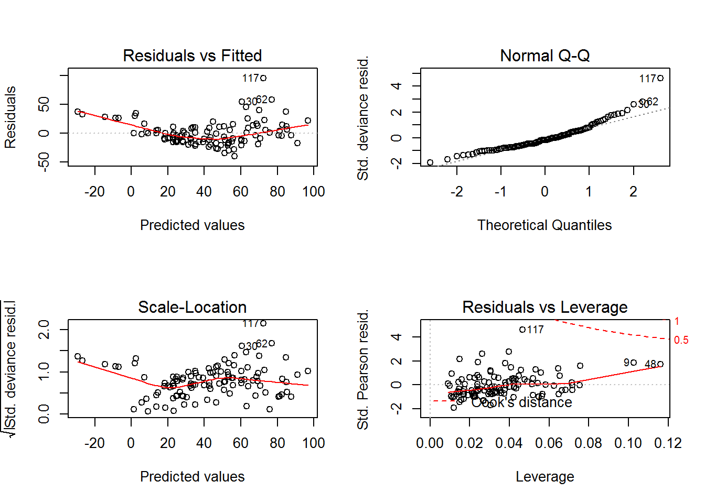
# the results suggests non-normality of residuals.
## Both LM and GLM analyses show that the predictors are significantly different, with AIC = 998.63, in spite of the fact that the predictors do not obey linear regression assumptions. This can lead to serious misinterpretation and prediction of relationships.Let’s go to GAMs
model3<-gam(ozone ~ s(rad)+s(temp)+s(wind), data = ozone.data)
summary(model3)##
## Family: gaussian
## Link function: identity
##
## Formula:
## ozone ~ s(rad) + s(temp) + s(wind)
##
## Parametric coefficients:
## Estimate Std. Error t value Pr(>|t|)
## (Intercept) 42.099 1.663 25.32 <2e-16 ***
## ---
## Signif. codes: 0 '***' 0.001 '**' 0.01 '*' 0.05 '.' 0.1 ' ' 1
##
## Approximate significance of smooth terms:
## edf Ref.df F p-value
## s(rad) 2.760 3.447 3.967 0.00849 **
## s(temp) 3.833 4.753 11.613 8.45e-09 ***
## s(wind) 2.910 3.657 13.695 1.59e-08 ***
## ---
## Signif. codes: 0 '***' 0.001 '**' 0.01 '*' 0.05 '.' 0.1 ' ' 1
##
## R-sq.(adj) = 0.723 Deviance explained = 74.7%
## GCV = 338.9 Scale est. = 306.83 n = 111anova.gam(model3) # kindly note: this gives the same results as in the summary() function##
## Family: gaussian
## Link function: identity
##
## Formula:
## ozone ~ s(rad) + s(temp) + s(wind)
##
## Approximate significance of smooth terms:
## edf Ref.df F p-value
## s(rad) 2.760 3.447 3.967 0.00849
## s(temp) 3.833 4.753 11.613 8.45e-09
## s(wind) 2.910 3.657 13.695 1.59e-08AIC(model3)## [1] 962.596## gave lower AIC of 962.298 compared to that of GLM
opar <- par(mfrow = c(2, 2))
plot(model3,residuals = TRUE) # plots model output, showing partial residuals
plot(model3,seWithMean = TRUE) # plots model output, with intercept confidence intervals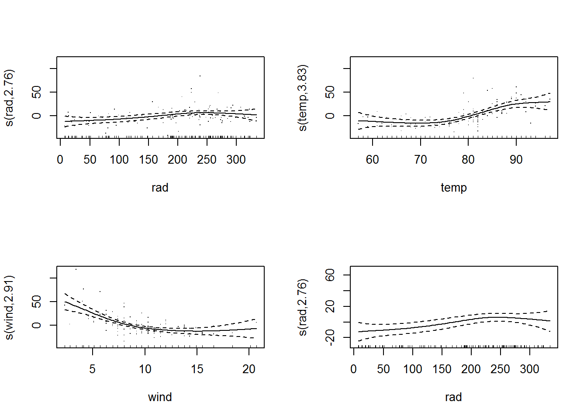
plot(model3,scheme = 1,unconditional = TRUE) # another plotting method. Note that "scheme=2" is the default shown in previous plots## Warning in plot.gam(model3, scheme = 1, unconditional = TRUE): Smoothness
## uncertainty corrected covariance not available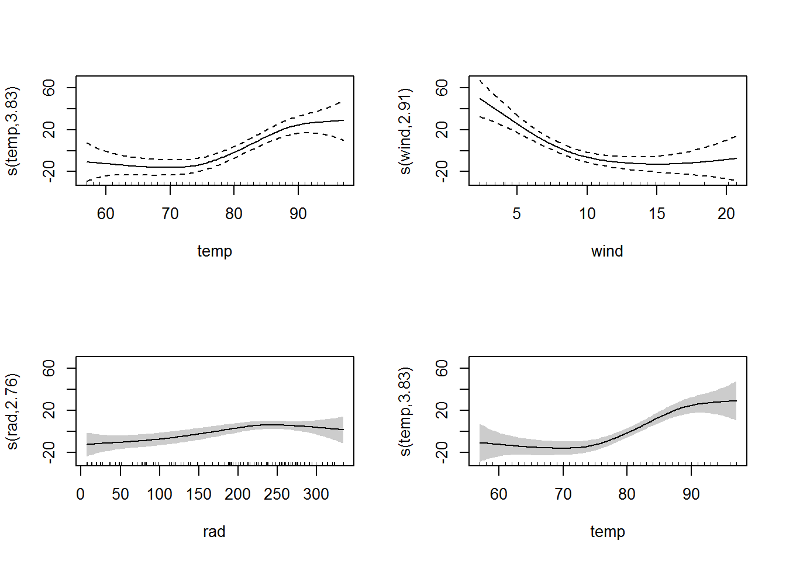
gam.check(model3) # checking the smoothing basis dimensions by running some diagnostic checks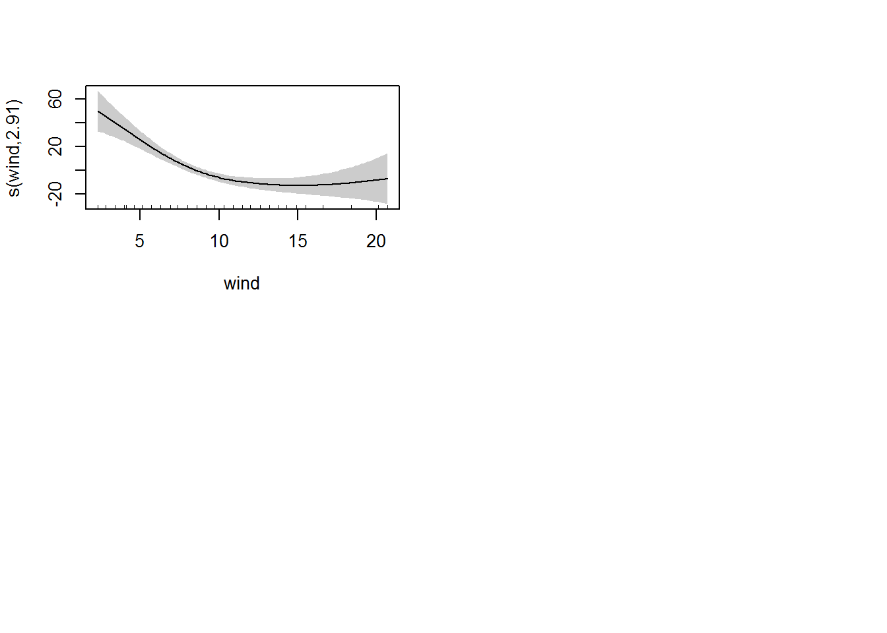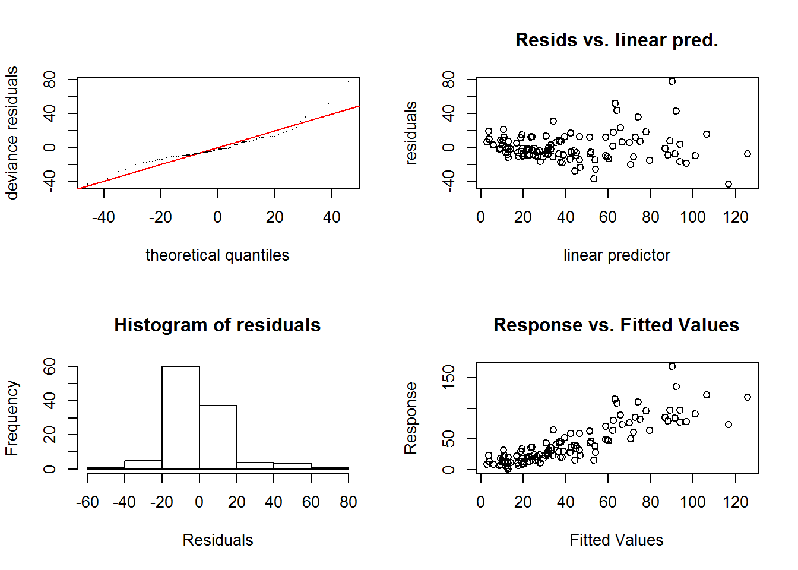
##
## Method: GCV Optimizer: magic
## Smoothing parameter selection converged after 5 iterations.
## The RMS GCV score gradient at convergence was 0.0004966112 .
## The Hessian was positive definite.
## Model rank = 28 / 28
##
## Basis dimension (k) checking results. Low p-value (k-index<1) may
## indicate that k is too low, especially if edf is close to k'.
##
## k' edf k-index p-value
## s(rad) 9.000 2.760 0.963 0.32
## s(temp) 9.000 3.833 0.788 0.00
## s(wind) 9.000 2.910 1.036 0.64# K' was observed to be 9.0 and K' = K - 1. So, even though we didn't set K, the default k used by the algorithm was 10
# the default method for estimating smoothness is GCV, which is a cross-validation method. Let's change it to a likelihood method using REML
model3a<-gam(ozone ~ s(rad)+s(temp)+s(wind), data = ozone.data, method = "REML")
summary(model3a)##
## Family: gaussian
## Link function: identity
##
## Formula:
## ozone ~ s(rad) + s(temp) + s(wind)
##
## Parametric coefficients:
## Estimate Std. Error t value Pr(>|t|)
## (Intercept) 42.099 1.677 25.1 <2e-16 ***
## ---
## Signif. codes: 0 '***' 0.001 '**' 0.01 '*' 0.05 '.' 0.1 ' ' 1
##
## Approximate significance of smooth terms:
## edf Ref.df F p-value
## s(rad) 1.668 2.087 5.248 0.00611 **
## s(temp) 3.415 4.249 12.773 6.03e-09 ***
## s(wind) 3.383 4.211 12.746 7.56e-09 ***
## ---
## Signif. codes: 0 '***' 0.001 '**' 0.01 '*' 0.05 '.' 0.1 ' ' 1
##
## R-sq.(adj) = 0.718 Deviance explained = 74%
## -REML = 473.63 Scale est. = 312.35 n = 111let’s add interaction terms, as we would expect in natural systems
wt<-ozone.data$wind*ozone.data$temp
model4<-gam(ozone ~ s(rad)+s(temp)+s(wind)+s(wt), data = ozone.data)
summary(model4)##
## Family: gaussian
## Link function: identity
##
## Formula:
## ozone ~ s(rad) + s(temp) + s(wind) + s(wt)
##
## Parametric coefficients:
## Estimate Std. Error t value Pr(>|t|)
## (Intercept) 42.099 1.358 31 <2e-16 ***
## ---
## Signif. codes: 0 '***' 0.001 '**' 0.01 '*' 0.05 '.' 0.1 ' ' 1
##
## Approximate significance of smooth terms:
## edf Ref.df F p-value
## s(rad) 2.650 3.304 3.168 0.0299 *
## s(temp) 5.493 6.614 7.590 4.99e-07 ***
## s(wind) 7.562 8.170 5.417 1.15e-05 ***
## s(wt) 6.754 7.685 5.808 6.92e-06 ***
## ---
## Signif. codes: 0 '***' 0.001 '**' 0.01 '*' 0.05 '.' 0.1 ' ' 1
##
## R-sq.(adj) = 0.815 Deviance explained = 85.3%
## GCV = 259.65 Scale est. = 204.78 n = 111anova.gam(model4)##
## Family: gaussian
## Link function: identity
##
## Formula:
## ozone ~ s(rad) + s(temp) + s(wind) + s(wt)
##
## Approximate significance of smooth terms:
## edf Ref.df F p-value
## s(rad) 2.650 3.304 3.168 0.0299
## s(temp) 5.493 6.614 7.590 4.99e-07
## s(wind) 7.562 8.170 5.417 1.15e-05
## s(wt) 6.754 7.685 5.808 6.92e-06AIC(model4) # gave AIC value of 927.247## [1] 928.3013plot(model4,residuals = TRUE) # plots model output, showing partial residuals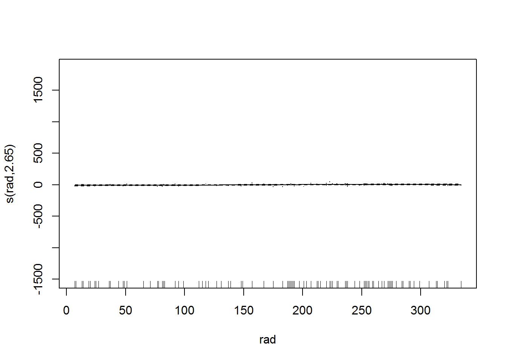
# the results showed "rad" predictor to be less significantly different under non-linear assumptions, and the plot also confirms it.
plot(model4,seWithMean = TRUE) # plots model output, with intercept confidence intervals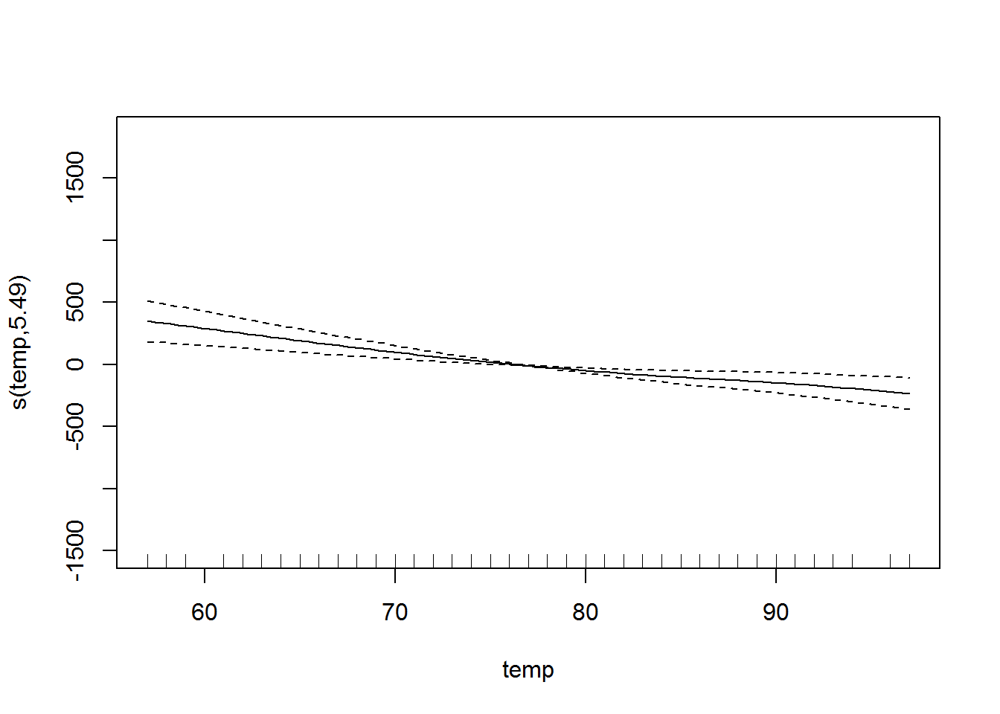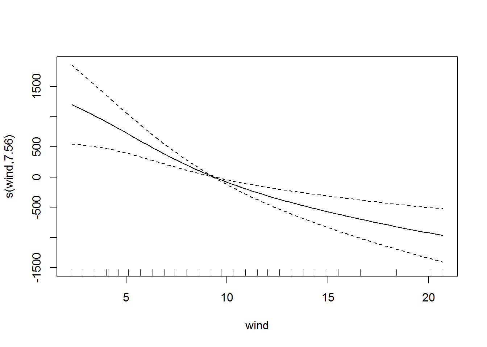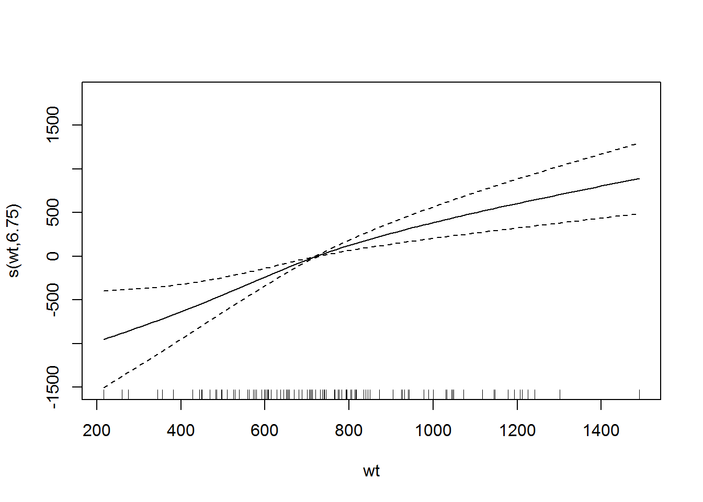
gam.check(model4)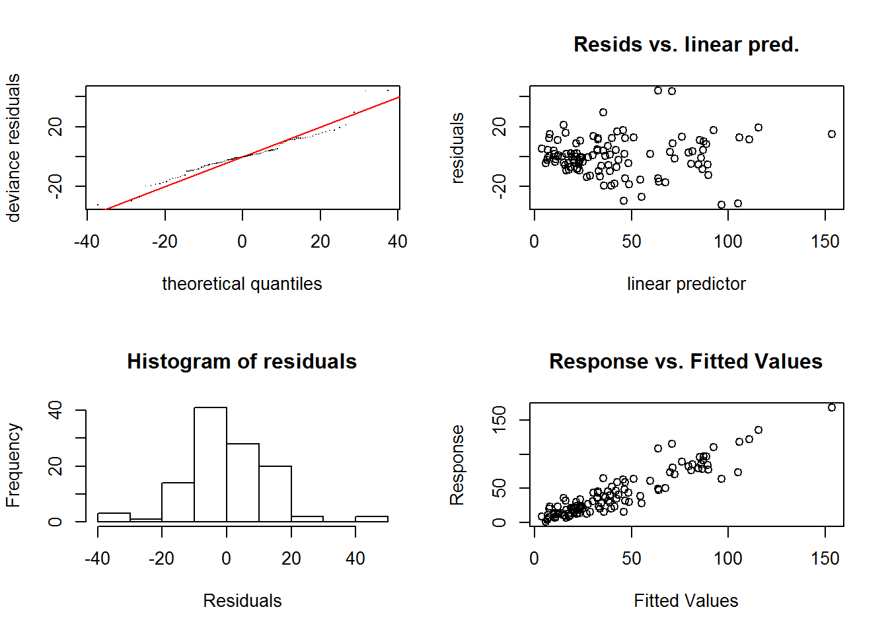
##
## Method: GCV Optimizer: magic
## Smoothing parameter selection converged after 8 iterations.
## The RMS GCV score gradient at convergence was 0.001522209 .
## The Hessian was positive definite.
## Model rank = 37 / 37
##
## Basis dimension (k) checking results. Low p-value (k-index<1) may
## indicate that k is too low, especially if edf is close to k'.
##
## k' edf k-index p-value
## s(rad) 9.000 2.650 0.902 0.16
## s(temp) 9.000 5.493 0.760 0.00
## s(wind) 9.000 7.562 1.142 0.90
## s(wt) 9.000 6.754 1.134 0.92# the results from this diagnostic test shows that the default k is too low.
# compare between the two models
anova(model3,model4, test = "F")## Analysis of Deviance Table
##
## Model 1: ozone ~ s(rad) + s(temp) + s(wind)
## Model 2: ozone ~ s(rad) + s(temp) + s(wind) + s(wt)
## Resid. Df Resid. Dev Df Deviance F Pr(>F)
## 1 98.143 30836
## 2 84.227 17926 13.916 12910 4.5301 5.357e-06 ***
## ---
## Signif. codes: 0 '***' 0.001 '**' 0.01 '*' 0.05 '.' 0.1 ' ' 1# results showed significant difference between the two models, which could be due to the interaction term added to "model 4"
AIC(model3,model4) # could produce AIC for all the models at the same time. Clearly, the interaction produced better results for model selection## df AIC
## model3 11.50254 962.5960
## model4 24.45903 928.3013Now, we set smoothing parameter k for both additive and interaction models (models 3 and 4 respectively).
Recall, that the default k was 10 and the gam.check() indicates that k was too low, so we specify k and check the results
model3b<-gam(ozone ~ s(rad, k=20)+s(temp, k=20)+s(wind, k=20), data = ozone.data)
summary(model3b)##
## Family: gaussian
## Link function: identity
##
## Formula:
## ozone ~ s(rad, k = 20) + s(temp, k = 20) + s(wind, k = 20)
##
## Parametric coefficients:
## Estimate Std. Error t value Pr(>|t|)
## (Intercept) 42.099 1.659 25.38 <2e-16 ***
## ---
## Signif. codes: 0 '***' 0.001 '**' 0.01 '*' 0.05 '.' 0.1 ' ' 1
##
## Approximate significance of smooth terms:
## edf Ref.df F p-value
## s(rad) 2.761 3.461 3.943 0.0087 **
## s(temp) 4.101 5.138 10.928 8.94e-09 ***
## s(wind) 2.938 3.708 13.559 1.55e-08 ***
## ---
## Signif. codes: 0 '***' 0.001 '**' 0.01 '*' 0.05 '.' 0.1 ' ' 1
##
## R-sq.(adj) = 0.724 Deviance explained = 74.9%
## GCV = 338.47 Scale est. = 305.53 n = 111gam.check(model3b)##
## Method: GCV Optimizer: magic
## Smoothing parameter selection converged after 7 iterations.
## The RMS GCV score gradient at convergence was 0.0001559654 .
## The Hessian was positive definite.
## Model rank = 58 / 58
##
## Basis dimension (k) checking results. Low p-value (k-index<1) may
## indicate that k is too low, especially if edf is close to k'.
##
## k' edf k-index p-value
## s(rad) 19.000 2.761 0.963 0.30
## s(temp) 19.000 4.101 0.792 0.00
## s(wind) 19.000 2.938 1.040 0.59AIC(model3b)## [1] 962.3911## Based on AIC score, k = 20 didn't improve the results
model3c<-gam(ozone ~ s(rad, k=25)+s(temp, k=25)+s(wind, k=25), data = ozone.data)
summary(model3c)##
## Family: gaussian
## Link function: identity
##
## Formula:
## ozone ~ s(rad, k = 25) + s(temp, k = 25) + s(wind, k = 25)
##
## Parametric coefficients:
## Estimate Std. Error t value Pr(>|t|)
## (Intercept) 42.099 1.404 29.99 <2e-16 ***
## ---
## Signif. codes: 0 '***' 0.001 '**' 0.01 '*' 0.05 '.' 0.1 ' ' 1
##
## Approximate significance of smooth terms:
## edf Ref.df F p-value
## s(rad) 3.007 3.762 3.759 0.0103 *
## s(temp) 3.605 4.526 16.777 1.81e-11 ***
## s(wind) 22.999 23.851 5.612 2.03e-10 ***
## ---
## Signif. codes: 0 '***' 0.001 '**' 0.01 '*' 0.05 '.' 0.1 ' ' 1
##
## R-sq.(adj) = 0.802 Deviance explained = 85.6%
## GCV = 302 Scale est. = 218.72 n = 111gam.check(model3c)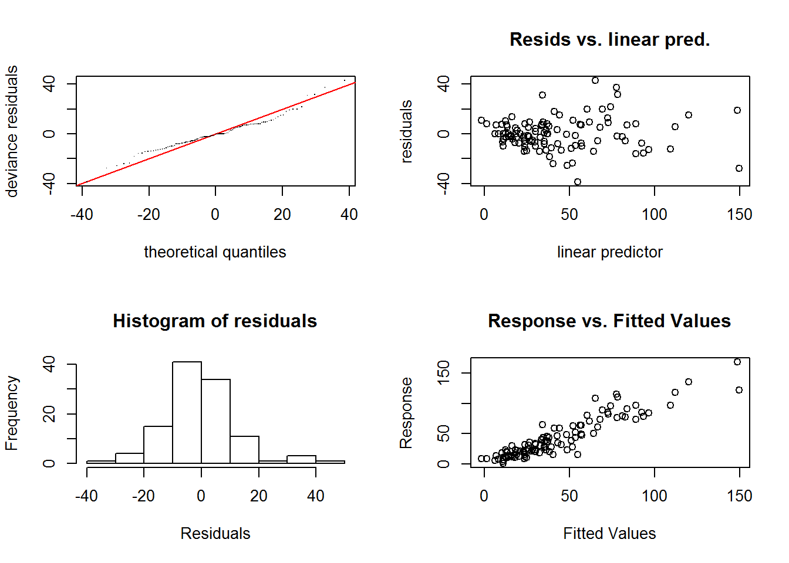
##
## Method: GCV Optimizer: magic
## Smoothing parameter selection converged after 10 iterations.
## The RMS GCV score gradient at convergence was 0.0008188915 .
## The Hessian was positive definite.
## Model rank = 73 / 73
##
## Basis dimension (k) checking results. Low p-value (k-index<1) may
## indicate that k is too low, especially if edf is close to k'.
##
## k' edf k-index p-value
## s(rad) 24.000 3.007 0.885 0.14
## s(temp) 24.000 3.605 0.753 0.00
## s(wind) 24.000 22.999 1.152 0.91AIC(model3c) ## a significant reduction in AIC value## [1] 940.4544plot(model3c) ## there is terrible overfitting of "wind" predictor, also, the edf value is too close to k', so we try again by reducing k for wind 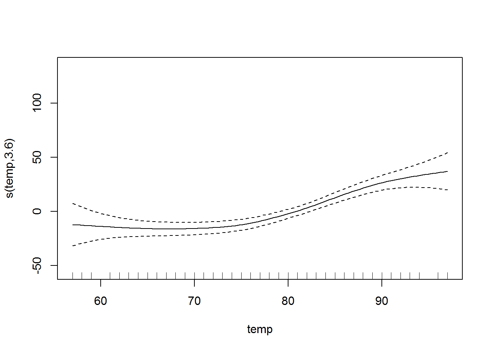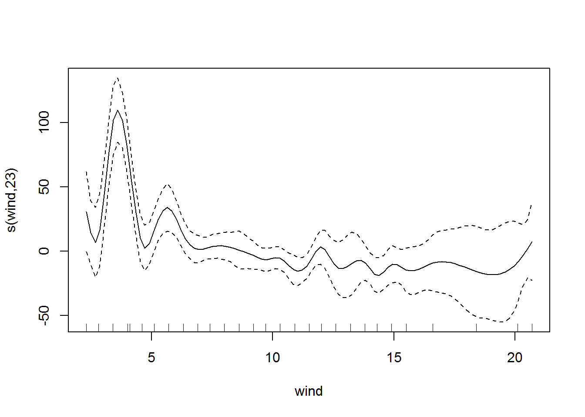
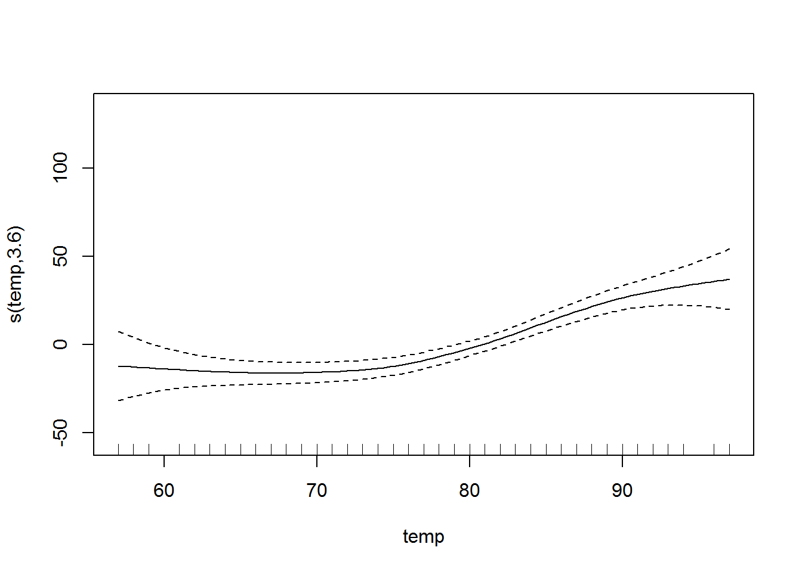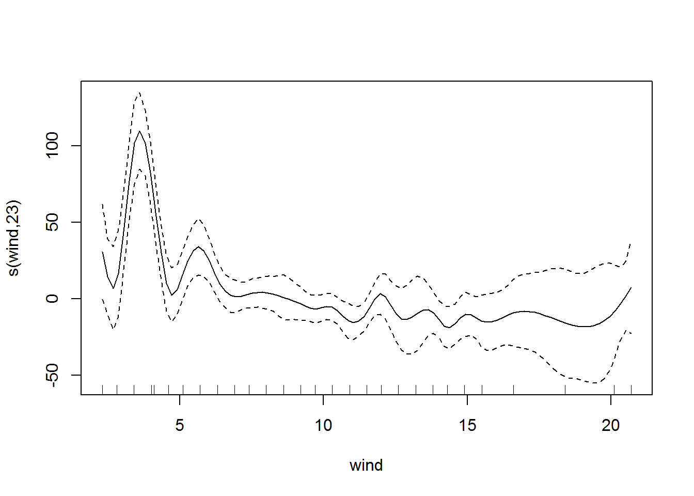
model3d<-gam(ozone ~ s(rad, k=25)+s(temp, k=25)+s(wind, k=10), data = ozone.data)
summary(model3d)##
## Family: gaussian
## Link function: identity
##
## Formula:
## ozone ~ s(rad, k = 25) + s(temp, k = 25) + s(wind, k = 10)
##
## Parametric coefficients:
## Estimate Std. Error t value Pr(>|t|)
## (Intercept) 42.099 1.659 25.37 <2e-16 ***
## ---
## Signif. codes: 0 '***' 0.001 '**' 0.01 '*' 0.05 '.' 0.1 ' ' 1
##
## Approximate significance of smooth terms:
## edf Ref.df F p-value
## s(rad) 2.762 3.463 3.941 0.00871 **
## s(temp) 4.088 5.126 10.943 8.89e-09 ***
## s(wind) 2.919 3.667 13.706 1.52e-08 ***
## ---
## Signif. codes: 0 '***' 0.001 '**' 0.01 '*' 0.05 '.' 0.1 ' ' 1
##
## R-sq.(adj) = 0.724 Deviance explained = 74.8%
## GCV = 338.47 Scale est. = 305.63 n = 111gam.check(model3d)
##
## Method: GCV Optimizer: magic
## Smoothing parameter selection converged after 7 iterations.
## The RMS GCV score gradient at convergence was 0.001249363 .
## The Hessian was positive definite.
## Model rank = 58 / 58
##
## Basis dimension (k) checking results. Low p-value (k-index<1) may
## indicate that k is too low, especially if edf is close to k'.
##
## k' edf k-index p-value
## s(rad) 24.000 2.762 0.963 0.28
## s(temp) 24.000 4.088 0.791 0.02
## s(wind) 9.000 2.919 1.039 0.60AIC(model3d) ## AIC values shot up again## [1] 962.3976AIC(model3, model3a, model3b, model3c, model3d) # compare AIC values for all fitted models## df AIC
## model3 11.50254 962.5960
## model3a 12.54705 967.8031
## model3b 11.80063 962.3911
## model3c 31.61090 940.4544
## model3d 11.76890 962.3976Exercise
Can you fit a GAM with best AIC value, highest deviance explained and less overfitting of the predictors? Hint: use different k values and try different additive and interaction terms (backward model selection). After trying different models, recommend to the researcher what is your recommendation for the researcher on what predictors to measure?
Suggested readings
- Granadeiro JP, Andrade J and Palmeirim JM (2004). Modelling the distribution of shorebirds in estuarine areas using generalized additive models. Journal of Sea Research 52: 227-240
- Hale SS, Hughes MH, Strobel CJ, Buffum HW, Copeland JL and Paul JF (2002). Coastal ecological data from the Virginian Biogeographic Province, 1990-1993. Ecology 83 (10): 2942, and Ecological Archives E083-057
- Leathwick JR, Elith J and Hastie T (2006). Comparative performance of generalized additive models and multivariate adaptive regression splines for statistical modelling of species distributions. Ecological Modelling 199: 188-196
- Bellido JM, Pierce GJ and Wang J (2001). Modelling intra-annual variation in abundance of squid, Loligo forbesi in Scottish waters using generalized additive models. Fisheries Research 52: 23-39
- Suarez-Seoane S, Osborne PE and Alonso JC (2002). Large-scale habitat selection by agricultural steppe birds in Spain: identifying species-habitat responses using generalized additive models. Journal of Applied Ecology 39: 755-771
- Yee T and Mitchell ND (1991). Generalized additive models in plant ecology. Journal of Vegetation Science 2:587-602
- Yee TW and Wild CJ (1996). Vector Generalized Additive models. Journal of Royal Statistical Society B 58 (3): 481-493
- Hastie T and Tibshirani R (1986). Generalized additive models (with discussion). Statistical Science 1: 297-318.
- Wood S (2002). Package ‘mgcv’. [Online]. Available: http://cran.rproject.org/web/packages/mgcv/mgcv.pdf
References (Weblinks): with R codes
- https://stat.ethz.ch/R-manual/Rdevel/library/mgcv/html/summary.gam.html
- http://multithreaded.stitchfix.com/blog/2015/07/30/gam/
- https://support.sas.com/rnd/app/stat/topics/gam/gam.pdf
- http://plantecology.syr.edu/fridley/bio793/gam.html
- http://geog.uoregon.edu/GeogR/topics/gamex1.html
- https://rpubs.com/ryankelly/GAMs
- http://www.statisticssolutions.com/assumptions-of-linear-regression/